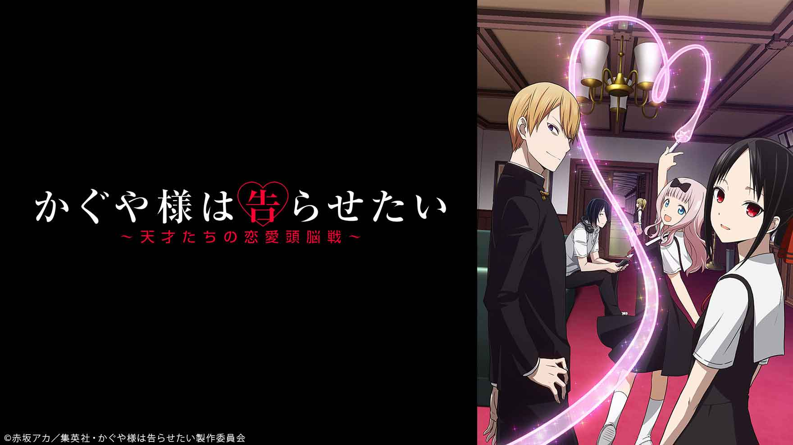

青春系
-
月がきれい

あらすじ
中学３年の春。初めて同じクラスになり、出会った小太郎と茜。小説家を夢見る文芸部男子と、走るのが好きな陸上部女子。運動会の用具係を通じてＬＩＮＥで話すようになり、二人の距離は近づき始める。行事続きで浮ついた初夏の空気の中、茜への想いを募らせた小太郎は……。 １年の頃から茜に想いを寄せる拓海、親友の茜を通じ小太郎に興味を抱く千夏……。
小江戸・川越を舞台に、爽やかに弾ける思春期の恋の物語。
キャスト
安曇小太郎：千葉翔也 水野 茜：小原好美
比良 拓海：田丸篤志 西尾 千夏：村川梨衣
山科ろまん：筆村栄心 小笠原大地：金子誠
宮本 心咲：石見舞菜香 佐藤 節子：鈴木美園
今津 美羽：千菅春香 田中さくら：井上ほの花
永原 翔：広瀬裕也 稲葉 保仁：石井マーク
滝沢 葵：白石晴香 金子 翼：熊谷健太郎
立花 大輔：岩中睦樹 園田 涼子：東山奈央
安曇龍之介：岡和男 安曇 淳子：井上喜久子
水野 洋：岩田光央 水野 沙織：斎藤千和
水野 彩音：前川涼子感想
中学生のリアルな恋愛を忠実に再現したアニメ。
物語全体を通して共感できて中学時代を思い出す、そんなアニメでした。
お互い恋愛経験がなく初めての事に葛藤する主人公とヒロインの姿は、恋愛したことある人なら経験したことあるようなシーンばかりで感情移入してしまうこと間違い無いでしょう。
全13話とアニメを普段見ない人でも手をつけやすい、男女問わずオススメできる作品です。
色づく世界の明日から
あらすじ
少女はむかし、自分に魔法をかけた。”わたしは幸せになってはいけない”
物語の始まりは数十年後。 日常の中に小さな魔法が残るちょっと不思議な世界。
主人公の月白瞳美は17歳。魔法使い一族の末裔。 幼い頃に色覚を失い、感情の乏しい子になった。
そんな瞳美の将来を憂えた大魔法使いの祖母・月白琥珀は魔法で瞳美を2018年へ送り出す。 突然、見知らぬ場所に現れ戸惑う瞳美の視界に鮮烈な色彩が飛び込んでくる……。© 色づく世界の明日から製作委員会
キャスト
月白 瞳美：石原夏織 月白 琥珀：本渡楓
葵唯 翔：千葉翔也 川合 胡桃：東山奈央
風野あさぎ：市ノ瀬加 那山 吹将：前田誠二
深澤 千草：村瀬歩 月白 瑠璃：大原さやか
月白 柚葉：潘 恵子 月白 弦：森川智之
葵 遙 ：本田貴子 月白 琥珀(60年後)：島本須美
感想
「凪のあすから」の篠原俊哉監督が紡ぐ、色づく世界の御伽噺
学生のいつもの日常に少しの魔法が加わることで非日常でありながら日常を楽しめる。そんな作品でした。 自分をあまり出さなかった主人公が少しずつ周りの影響を受け自分と向き合い変わっていく姿は見ていて勇気をもらいました。
そしてこのアニメは当サイトでも恋愛系で取り上げている「凪のあすから」の監督でもある篠原俊哉監督の作品です。篠原監督の作品はどれも良作なのでおすすめです。
『かぐや様は告らせたい～天才たちの恋愛頭脳戦～』

あらすじ
家柄も人柄も良し!! 将来を期待された秀才が集う秀知院学園!!
その生徒会で出会った、 副会長・四宮かぐやと会長・白銀御行は互いに惹かれているはずだが…
何もないまま半年が経過!! プライドが高く素直になれない2人は、 面倒臭いことに、 ”如何に相手に告白させるか”ばかりを考えるようになってしまった!？
恋愛は成就するまでが楽しい!! 新感覚”頭脳戦”ラブコメ、 開戦!!
キャスト
四宮かぐや： 古賀葵
白銀 御行： 古川慎
藤原 千花： 小原好美
石上 優： 鈴木崚汰
早坂 愛： 花守ゆみり
感想
コメディありドキドキありの新感覚”頭脳戦”で必ず笑える作品です！！